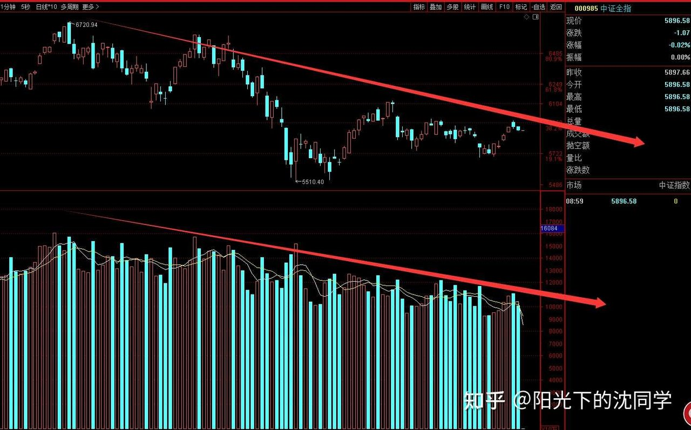
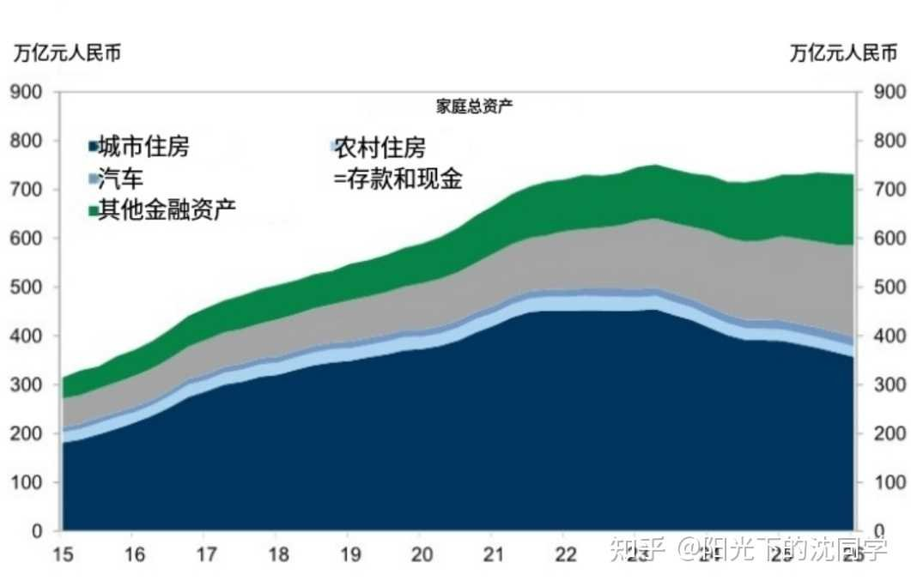
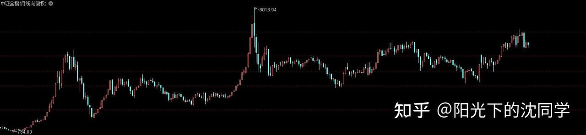

本文的核心逻辑在于从宏观资金面、资产配置周期以及主力资金博弈的角度，剖析了A股当前缺乏趋势性行情的根本原因在于成交量与赚钱效应的错配。作者指出，在市场缺乏持续性增量资金（如日均2.5万亿以上成交额）时，盲目右侧追高胜率极低，必须通过“控制仓位+保留现金”来对抗市场不确定性。同时，文章通过宏观家庭资产负债表的演变（房产权重下降、金融资产上升），论证了全民炒房时代的结束与向股权资产、ETF、红利资产配置转型的必要性。在行业选择上，建议遵循“资金拥挤度低、调整周期充分、具备政策硬指标”的逆向布局逻辑（如低位创新药和冷门科技蓝筹），而非随波逐流追逐高位热点。
提前祝大家中秋快乐，快快乐乐过节，过完节收益长虹！
投资这个事情挺神奇，如果真的有行情，你不需要怎么努力，也会做的很顺，反之，你再急也没用
行情想持续走强，需要指数可以底部提升，并且不断突破，成交量稳步推进，最好是成交量每天2.5万亿以上，不然肯定整体比较弱
资金面弱，赚钱效应也容易跟不上，就没有什么主线行情，主要是细分领域活跃，主要是游资博弈行情注【本质逻辑】当大盘整体成交量低迷、缺乏宏观增量资金入场时，存量资金无法支撑权重板块普涨，只能退守至局部细分领域（如传媒、地产、AI液冷等）。由于没有基本面长线资金托底，这类行情往往呈现出情绪化、快进快出的特征。【新手提示】游资炒作靠的是资金合力与情绪接力，往往‘来得快去得也快’。新手切忌用做价值投资的逻辑去追高，稍有不慎就会沦为高位接盘侠。
比如说我们看市场资金面的情况，可以发现传媒出版，房地产，AI产业链里面的液冷，CPU，农林牧渔这些有资金在关注的
其他就整体资金面一般般，趋势没有那么好，赚钱效应偏低
要扭转行情趋势，本质上需要指数+成交量+赚钱效应的三重改善，这个大家可以多观察，真的行情出现趋势性行情，肯定也不会几天结束，都是可以跟得上的
如果没有这些行情改善，那么自然胜率偏低，不太好玩，当然就要尽可能多留现金仓位，保护自己的本金安全，按住自己的口袋，减少交易频率
尤其是在筹码分布高位更加难做，进攻的时候如果习惯去加仓，重仓，都会比较麻烦
我个人的实战经验来看，在资金面和趋势不太好的行情里面，会选择尽可能多休息，会比较重视债券这种安全资产
除了博弈一些细分领域机会，其他不会乱参与，会更多的以控制风险为主，而不是重仓出击为主
等行情有机会再做，而不是直接勉强创造机会，是投资者要尊重市场的认知
千万不要觉得自己可以超越市场，先看看市场给不给机会，趋势怎么样，在考虑自己的仓位应该怎么安排
有时候在一轮低迷的行情里面，什么都不做反而战胜了其他大部分投资者
开开心心过节，好好优化持仓，多一点耐心，拿得住现金仓位，是很高级的投资智慧

【多空力量对比】：K线图显示指数在前期高点附近遭遇长期均线压制，上方套牢盘沉重，多头多次试图上攻均因缺乏增量资金而无功而返。【图形心理暗示】：成交量柱状图在近期持续萎缩，表明市场观望情绪达到顶点，主力资金呈净流出态势。【新手向视觉警示】：量缩价平或量缩微涨通常是变盘向下的先兆，切勿在没有放量突破前盲目左侧抄底或加重仓位。
分享一些最新的行业调研资料，都是未来可能出现的行情热点，喜欢的朋友可以收藏起来，慢慢学习研究
生物医药是我个人比较喜欢调研和配置的方向
前不久印发的《医药工业发展规划》，里面很多细节
它不是泛泛而谈的长期支持医药行业发展，而是给出了可量化、可验证的硬指标
到2030年，生物医药研发应用稳居世界前列，产业加速成为国家新兴支柱产业
创新药产业规模年均增速20%以上
首创新药（FIC）全球占比25%以上
创新医疗器械上市累计200个以上
医药工业上市企业平均研发投入强度年均不低于10%
全球年销售额超10亿美元的品种5个以上
同时，规划首次系统部署AI制药、脑机接口、核素诊疗、太空制药等前沿方向，并明确支持CRO/CDMO提升面向全球市场的服务能力
这些是非常长期利好创新药+生物科技+AIDD公司+CRO/CDMO服务商、高端医疗器械+IVD器材这些龙头企业的
这些都是值得大家研究的方向
而且资金面来看普通主动基金对医药的持仓占比仅2.0%—2.9%，处于近三年极低水平
资金面方面对于来看是好事，每次某一个行业的行情顶底都和资金拥挤程度注【本质逻辑】股票的短期涨跌本质上是资金的供求关系决定。当某个行业被所有机构和散户超配（即拥挤度极高），潜在买盘耗尽，哪怕基本面再好也容易引发踩踏式抛售；反之，长期无人问津的冷门行业，筹码干净且估值安全，反而容易受到大资金的逆向吸纳。【新手提示】不要盲目跟风买入市场上最热闹、讨论度最高的主流板块，要学会去挖掘‘机构持仓占比低、讨论度冷清但有政策支持’的左侧品种。有关系，如果大部分资金，机构暂时撤离了这个方向，相当于资金退潮一样，股价，估值会更干净，机会就更多
反而是资金非常拥挤的地方估值高，反而未来几年可能跑数行情，可能收益不太好
所以大家要寻找长期比较安全，比较好的配置方向，要多考虑大部分资金不怎么配置的方向，机会更多
这个思路对于1-2年以上维度的投资是非常不错的，大家可以记一下笔记
每天原创不易，读者朋友千万不要忘记点赞支持一下
正所谓先赞后看，腰缠万贯
大家可以先点一波赞，我们再继续慢慢聊
现在限制非常多，坚持更新越来越难
祝点赞的朋友福寿无量，天天开心
根据最新的统计，我国家庭总资产约730万亿元，在经历六个季度的回落之后，总量已经止跌企稳
资产的结构来看，长期充当家庭财富压舱石的房地产权重持续回落，金融资产在不断提升
单纯依赖房价一直上涨带动家庭资产稳步提升的时代肯定是过去了
未来要实现家庭资产的稳步增长，肯定需要懂合理的资产配置，要有股权思路，懂得配置各种ETF，不然赚到手的现金流会持续不断的贬值，没办法积累下去
平时多看书，多学习投资方面知识是真的非常有必要的
在过去很无脑，就是有钱就买房，囤房子，这样就不怕通胀，不怕现金贬值，房子囤的多就有时代红利，是很粗狂的
但任何资产都有周期，都有快速爆发期和长期调整的周期
在需要多元化配置资产的未来时代，多懂点投资理财知识，肯定是非常实用的
放假的时候，平时空闲时期都可以学一学

【多空力量对比】：宏观资产配置结构图直观反映了居民财富大迁徙的博弈过程，房地产资产占比逐年下降，而银行存款与金融资产占比显著抬升。【图形心理暗示】：曲线的变化暗示全社会对单一地产的信仰正在瓦解，资金正在寻找新的蓄水池。【新手向视觉警示】：顺应宏观大势，房产作为财富压舱石的红利期已过，必须建立股权投资思维，通过ETF逐步布局金融资产以对抗通胀。
2021年左右，中房产占家庭资产比重为67%，现金及存款占16%，其余金融资产占15%
到今年一季度，房产占比回落至52%，存款上升至25%，其他金融资产提升至20%，居民直接持股比例小幅上行至6%
在股权投资方面还有很大的提升空间，尤其是很多长期优质的红利资产，这些是很普惠的股权资产，很多家庭和投资者还没有意识到这些资产长期的价值
比较多元化的资产配置可以获得的现金流收入应该包含长期优质ETF和企业股权的自身复利增长
然后有房租，分红派息这些收益
不会局限于收入都是工资或者房价的上涨
而且房价的上涨如果不变现，就一套自住房也没办法变现，最终所有收入还是围绕工资，这样就非常被动
就肯定需要长期去研究各种优质企业，ETF，从而在这方面配置获得资产增值，并且获得长期稳定的分红，股息收入
这是大家要去思考的长期家庭资产优化方向
要去积攒优质股权，要不断提升每年的分红派息收益
等以后年纪大了，退休了，生活会更丰富多彩，而且也可以让你提前退休

【多空力量对比】：核心宽基估值水位表界定了不同指数的泡沫区、高估区、合理区与低估区，是衡量市场安全边际的重要标尺。【图形心理暗示】：数字区间为投资者设定了心理锚点，提示市场当前所处的位置并不具备整体疯牛的基础。【新手向视觉警示】：严格对照表格进行逆向操作，远离处于‘泡沫区’的高位品种，多关注触及‘低估区’的宽基与标的。
大家有任何投资疑问，有什么想交流的都可以在知乎首页付费咨询，想单纯支持一下也可以
【在知乎上我的主页咨询即可，没有任何群，不搞私下小圈子】
各种问题都可以咨询，仓位优化，估值分析，行业分析，心态调整，各种投资学习技巧都可以咨询
大家的支持和尊重是我创作的最大动力
感恩大家每天的咨询，感谢大家对知识的尊重，感谢大家对我的支持
欢迎咨询
行情闲聊
在赚钱效应比较弱，胜率偏低的行情里面，我个人不会大幅加仓，会严控仓位，拿住长期优质底仓不动+关注细分领域活跃机会的基础上，等待市场给出更多廉价筹码再加仓
尤其是短线博弈账户，会更加谨慎
美股高位运行，暂时没有什么价值
黄金波动很大，最近大幅调整，这方面有关注价值，可以长期关注，又重新出现机会
红利分化大，避开高位方向，多关注低位优质红利资产
债券目前比较值得关注，可以多研究
现在是在慢慢开启全球加息周期，流动性肯定会有压力
而且加息周期很漫长，有时候影响好几年，所以不要过于在意短期行情波动，多看看大局，避开高位品种，重视现金仓位，这些都是核心思路
大家可以看看中证全指的一个运行周期情况
在不太好的行情里面，小的调整周期1-4个月，大一点的调整周期4-8个月，更大一点的8-16个月

【多空力量对比】：中证全指的月线级别运行周期图展示了宏观趋势的漫长构筑期，每一轮大级别的调整往往需要数月甚至数年时间的震荡来消化浮动筹码。【图形心理暗示】：长周期均线呈现出明显的震荡筑底形态，空头能量在时间换空间中逐渐衰竭。【新手向视觉警示】：大周期决定大方向，在月线级别调整周期未结束前，要有足够的耐性等待右侧信号，切忌在熊市长周期中频繁短线换手。
周期思维非常重要，你做t注【本质逻辑】即‘T+0’的高抛低吸操作。通过在盘中股价下跌时买入、上涨时卖出同等数量的底仓，来降低持仓成本。这需要密切关注分时图的波动周期与个股独特的‘股性’。【新手提示】做T是建立在‘拥有底仓且对个股股性极其熟悉’的基础之上的。新手如果没有过硬盘感，盲目在弱势中做T很容易变成‘越做成本越高’或者‘卖飞主升浪’。需要关注分时图周期
做波段要关注日线，周线周期
做大一点的价值投资要看月线，季线周期
各种品种都不可能直线的上涨或者下跌，都是有一个运行周期
而且不同的品种都有自己的运行特点，就像每个股票都有自己的股性
很多时候我们筛选自选股，发现了一些好公司，需要有时候去尝试做一做，开开仓，也是在体验股性，这个真的非常非常重要
是职业投资者很看重的
有时候不要觉得几百股很少，没意义，实际上投资不是说你一口气买几万股就赚钱，就胜率高
股数和胜率完全是两码事
买的多，买的少，不影响胜率
所以你一开始在接触到一个股票的时候，最好的方法是少量开仓，先体验股性，先看看走势情况
然后再根据自己了解到的情况决定去留，是继续加仓做，还是出来放弃
这个是很多新手投资者没有的过度
就是想要不梭哈压上，不管不顾，要不就完全不做，没有一个试探，尝试的过程，胜率自然不高
我个人非常推荐大家在配置任何资产的时候，先少量开仓尝试，感觉比较顺手再慢慢追加
不要觉得少，你做不了的股票，买的多，亏的多
所以一开始买的少是好事，不是坏事
做投资要细腻一点
而且要先看清楚这个资产周期情况，长期是不是便宜，有没有上涨空间，还有有没有未来，然后再看短期是不是参与一些博弈，或者做一些建仓
思路需要这样非常清晰，就像目前很多高位品种，未来调整周期都非常长，那么我肯定不会长期重仓去配置
就算是短期跌多了，参与超跌反弹，也是短线博弈，也是会快速获利了结的，因为大的周期，趋势没有空间
错了也会快速止损，不会去长期重仓做
现在会长期想持有，或者长期去做的，肯定是要低位，周期蓄势待发，是下一轮牛市有空间，资金有炒作周期的
要站在大资金角度思考问题，大资金要做一个行情，不仅仅是说行业好，基本面好，企业多好，大资金本质上入场要赚钱
那么位置肯定要低，要不拥挤，最好是调整好几年那种，估值还不高，目前比较冷的那种，大资金才愿意来玩，这种方向确实表面来看有各种问题，大家也不怎么看好，但实际上这种大资金反而运作空间大
不是舆论好，大家都看好的品种才容易赚钱，而是让大资金进得来，人家有拉升的空间，愿意来玩，才有赚钱空间
这个不能本末倒置
本来就是好企业，行业不错，然后在低位，这种低位科技肯定是很不错的，可以每次杀跌，便宜的时候关注
或者是白马蓝筹，估值低，调整很多年，目前在低位震荡，在慢慢吸筹，股息好，也没有怎么参与这一轮行情上涨，主力有运作空间，这种当然也非常不错，都是未来几年胜率会偏高的，是拿着不需要那么担心的，只需要严控仓位就行
这些品种港股，A股市场都不少，可以好好挖掘，思路是非常清晰的
如果现在这种行情，一轮新的调整未来几年要展开，那么你去长期拿住高位品种，不止损，那未来几年本金回撤空间会非常大，这种就很耽误时间，也耽误行情，还不如债券资产
不要迷迷糊糊做投资，先想清楚这些问题
把自己的持仓优化好
该止损的止损，减少仓位的减少仓位，有潜力的便宜的保留，或者来回做做t，降低成本都是可以的
对自己的账户持仓需要有这些很清醒的认识
而不是模糊的，跟风的那种，但凡是不怎么确定的持仓，其实都不应该重仓，或者应该早一点出来，搞清楚了再配置
不是自己能力圈之内的东西，你做不好，提心吊胆的，也拿不住，仓位也控制不好，这种都不要去配置，不要妄想在自己能力圈之外还可以赚大钱，这个不可能的，但很多投资者喜欢做这种梦，导致本金大幅回撤，甚至耽误后面很多年的行情，一直没办法回本
这些都是非常现实的问题
在应对投资问题，投资决策方面，不要头铁，不要总是想靠运气去赚钱，不可能的
投资账户长期的资产曲线，就是和你的经验，认证，心态，综合投资能力完完全全匹配
是完完全全匹配的，没有意外空间
短期运气好赚的钱，后面一样会快速失去
很多投资者都有过这样的经验，就是不知道为什么自己某一些时间段，交易非常不顺，本金大幅回撤，把过去很多利润都搭进去
这个很正常，就是因为本来之前的利润也是因为行情好，跟着赚的，所以稳不住，留不住收益，没办法很好的获利了结，证转银，保住收益
只有完完全全靠自己懂的资产，才能知道什么时候配置，怎么去控制仓位，怎么去估值，才能做好
投资哪有捷径，捷径都是看起来是捷径，实际上反而是思路
任重而道远，希望大家认认真真对待投资，行稳致远，切不可忽视投资风险
风险提示：股市有风险，入市须谨慎
今天是坚持写复盘笔记的第1529天【每日打卡】
下面是我自己多年来的一些重要的心得感悟，分享给大家，会不定期增加内容
1，
长期投资成功的关键是稳定的情绪和沉稳的性格，这些比过人的天赋更重要
2，
最终我们穷其一生获得的一切经验、知识和所有财富都需要转化为自身的品德修养，不然获得越多失去越多
自身的修养是留住各种财富最好的容器，富裕一时不难，富裕一生不易
珍惜获得的一切，保持初心、慈善、知足，让自己的德行和财富共同成长，才能方得始终
3，
古之成大事者，不惟有超世之才，亦必有坚忍不拔之志
想成为优秀的投资者一定要持之以恒，不断学习，反思，总结，在投资中获得的各种经验最终都会成为你财务自由的砖瓦
4，
再高的智商也一样会被情绪一瞬间冲垮
大部分的亏损都来源于投资者的冲动和情绪化交易，学会控制自己的情绪和心态才能长期稳定的复利
5，
富在术数，不在劳身
一定要多思考，任何时候想清楚了再交易，漫无目的的交易，只会多做多错
6，
利在势居，不在力耕
投资赚钱主要靠把握时机，没有机会就休息，多留现金
做可以让自己心安的投资，便是对于你来说最好的盈利模式
7，
谨记：贪念起，万念俱灰！
控制住了风险，利润会随之而来
富贵险中求，也在险中丢
求时十之一，丢时十之九
祝大家在如梦如幻的行情里清醒而自由
每天和读者朋友声明一遍：
每日复盘内容不涉及具体仓位，持仓，代码，买卖，点位，趋势判断这些内容
有任何疑问，不清楚的，都可以在知乎首页上咨询，什么都可以问，知无不言
当前投资难度：极高
交易胜率不高，整体机会不如细分领域机会
投资者应该谨慎，控制好仓位，多留现金，不要冲动交易
多关注资金面好的核心细分领域机会，低估值，低位科技，低位白马蓝筹，不要追涨杀跌，不要乱追高
全文的核心逻辑在于：面对当前胜率偏低、资金面弱势的A股市场，投资者必须摒弃“靠运气和冲动赚钱”的赌徒思维。核心逻辑总结为：1. 趋势为王，在没有宏观增量资金与赚钱效应共振前，必须把资金安全放在首位，严格控制仓位并保留充足现金；2. 宏观资产配置正在发生根本性转变，必须破除旧有的囤房思维，转而建立基于股权和分红收益的资产配置观；3. 行业选择要坚持左侧逆向思维，寻找资金拥挤度低、处于长期底部且有政策硬指标支撑的品种。新手防踩雷法则：切忌追涨杀跌、频繁交易；切忌重仓参与自己认知圈之外的高位热门股；学会利用小仓位体验股性和学习资产周期，以敬畏之心行稳致远。

![[图片]](https://picx.zhimg.com/v2-155c0bc28737f13e3b38f5a5e4e2535c_qhd.jpg?source=1d2f5c51){kind=link}
{kind=link}
{kind=link}
{kind=link}
老沈今天的文章值得多读几遍，等我假期再认真看看
按照老沈的意思，应该是没有大幅加仓，并且应该除了一些小的热点方向都没有去乱做，非常谨慎，老沈应该还是会和以前一样大跌加仓
我之前就是很喜欢用侥幸心理去投资，总是想试一试，对风险不重视，耽误了挺多年时间
看人家赚钱说不着急是假的，看指数红彤彤的肯定也想加，控制好仓位，理性去做投资，这个过程真的煎熬，像戒瘾一样，以前满仓最怕跌，现在跌了反而高兴，因为能买更便宜的筹码，人真的是会变的
祝大家节日快乐，健健康康，永远不死
唉，自选股都看不到了吗？
大家双节快乐！今天下午回家过中秋，中间的3个工作日不打算回学校了，直接放个小寒假[酷]。这段时间运气不错，一直关注的一个细分领域龙头股中报过后有明显资金运作痕迹，激情加仓小捞一笔，拿了点利润出来买了个新发布的水果手表，回家鼓捣鼓捣
有没有懂行的朋友说一下，明天是不是就不开盘了，不需要蹲老沈的更新了？
今天无成交额排行榜[大哭][大哭]
按照老沈的意思，应该是没有大幅加仓，并且应该除了一些小的热点方向都没有去乱做，非常谨慎，老沈应该还是会和以前一样大跌加仓
我之前就是很喜欢用侥幸心理去投资，总是想试一试，对风险不重视，耽误了挺多年时间
看人家赚钱说不着急是假的，看指数红彤彤的肯定也想加，控制好仓位，理性去做投资，这个过程真的煎熬，像戒瘾一样，以前满仓最怕跌，现在跌了反而高兴，因为能买更便宜的筹码，人真的是会变的
祝大家节日快乐，健健康康，永远不死